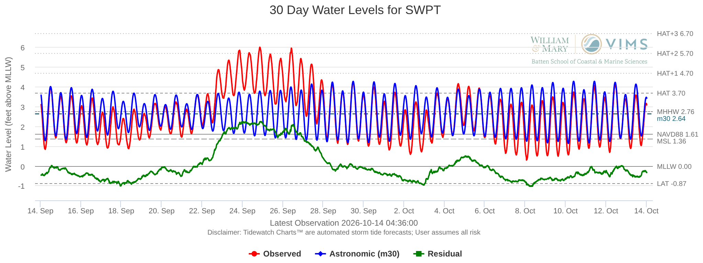
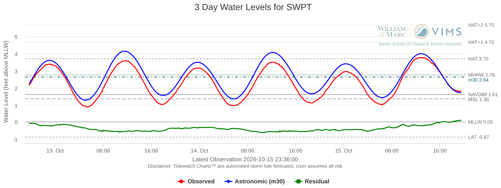
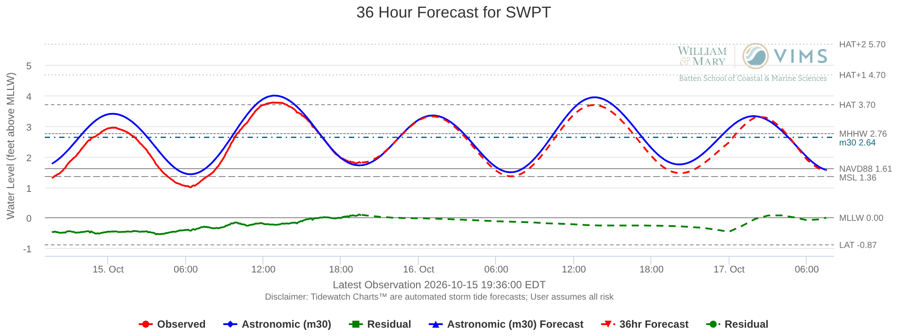
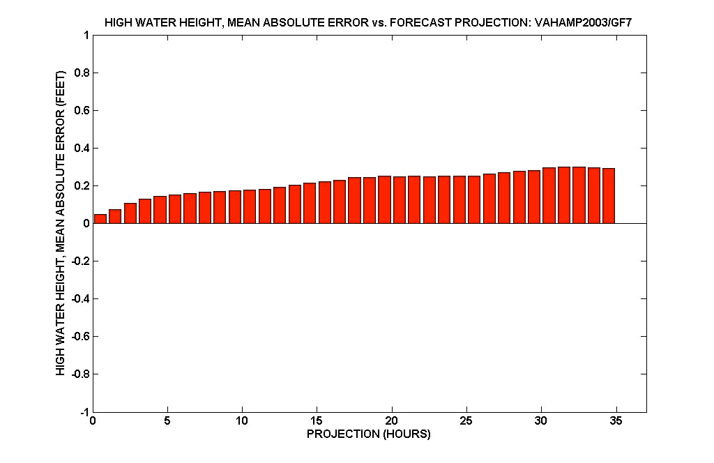

Disclaimer – The Virginia Institute of Marine Science (VIMS) makes no warranty concerning any of the data displayed on its real-time water-level observations website (www.vims.edu/tidewatch), which includes 36-hour water-level forecasts at 35 active stations operated by NOAA, the USGS and partners in the lower Chesapeake Bay, tidal Potomac, Eastern Shore and Hampton Roads. Tidewatch Charts™ are automated storm tide forecasts; user assumes all risk. The interactive charts, served from web4.vims.edu/physical/tidewatch/, are updated hourly and show three windows—a 36-hour forecast, a 3-day window and a 30-day window—each in feet above mean lower low water (MLLW) and above NAVD88, each with a CSV download. The information provided by Tidewatch is offered “as-is” with no claim explicit or implied as to its accuracy or timeliness. The user assumes all risk regarding Tidewatch or any of the following components:
Unverified Water Levels – Six-minute water levels are obtained automatically from tide stations operated by the National Oceanic and Atmospheric Administration, National Ocean Service (NOAA/NOS), Center for Operational Oceanographic Products and Services (CO-OPS) through the CO-OPS Data API (api.tidesandcurrents.noaa.gov), which replaces the retired CO-OPS SOAP web services; from U.S. Geological Survey (USGS) tide gauges through USGS water services; from VIMS tide stations; and from StormSense/GreenStream sensors (GS01 and GS02). [Derek: confirm – the 2012 text read: “Observed water levels are recorded every six minutes on the hour and tenth-hour at continuously operating VIMS tide stations and downloaded automatically via GOES satellite at half-hour intervals (Jamestown North Ferry Pier) and hourly intervals (Back River Dandy Haven).” Is this still how the VIMS stations report?] Consistent with its purpose as a flood warning system, Tidewatch displays observed six-minute water levels in near-real time or as soon as possible after collection. Due to this requirement, manual verification and data quality-control procedures are not implemented. Extraneous heights or data ‘outliers’ should be disregarded.
Astronomic Tides – Astronomic tides are computer-generated at six-minute intervals by a VIMS tide prediction program using tidal harmonic constants derived from a least-squares harmonic analysis (Boon’s HAMELS method, described in Secrets of the Tide) of either a one-year (369-day) or 9-month (273-day) time series of water-level observations at tide stations included in the Tidewatch network. VIMS tide predictions use up to 27 tidal constituents per station but do not include the solar annual (Sa) or solar semiannual (Ssa) constituents normally used to represent the average seasonal cycle, a cycle derived from monthly water levels averaged over several years. VIMS’ astronomic tides are displayed as a blue line labeled Astronomic (m30) together with corresponding observed water levels shown as a red line in the Tidewatch 30-day window (Fig. 1). Within this window, the astronomic tide is referenced to the observed water level averaged over the past 30 days, a level drawn as a teal dash-dot line marked m30 at the right of the chart. As a short-term moving average, the m30 line approximates sea level in real time—a constantly changing level that responds to the actual seasonal cycle as well as longer term oceanographic signals as they appear during the year at hand.
Residuals – The difference between observed water level and predicted astronomic tide (the residual) provides a measure of the non-tidal water-level change. Shown as a green line in the Tidewatch charts, the residual represents water-level change forced primarily by local winds and variations in atmospheric pressure and for this reason is sometimes called the weather tide. Because the astronomic tide and the observed water level have the same mean over the past 30 days in the Tidewatch application, the average residual during this period is zero. Thus a negative residual indicates weather acting to lower water levels locally whereas a positive residual indicates the reverse (Fig. 2). When a storm occurs and positive residuals exceed a certain height, the resulting green line depicts a storm surge, as in the residual of about 2 feet during 23–27 September in Fig. 1.
36-hour Water-Level Forecasts – Tidewatch 36-hour forecasts are generated by adding the astronomic tide (referenced to m30) to storm surge forecasts obtained from the National Weather Service (NOAA/NWS) Extratropical Storm Surge (ETSS) model, driven by winds and pressures derived from the NWS Global Forecast System (GFS) atmospheric model.


36-hour Water-Level Forecasts (continued) The NWS extratropical storm surge model differs from similar hydrodynamic models by not including the astronomic tide or other types of oceanographic forcing broadly categorized as a sea-level anomaly. A water-level forecast similar to Tidewatch is generated by the NWS Meteorological Development Laboratory (MDL) for extratropical storms according to the following formula: forecast = tide + surge + anomaly. While NOAA tide predictions reference a fixed tidal datum (see Tidal Datums section below), Tidewatch includes the anomaly in its tidal predictions by referencing the tide to a dynamic datum (m30) and so uses tide + surge as its formula.
Figure 3 illustrates how a typical Tidewatch water-level forecast is derived. It can be seen in this figure that the most recent observations can be extended as a forecast (red dashed line) by simply extending the residual using the ETSS forecast (green dashed line) and adding the astronomic tide. Tests conducted at VIMS with hind-cast data found that the extratropical surge model tends to over-predict in the lower Chesapeake Bay region. Consequently, ETSS output is first multiplied by a reduction factor (0.7) before applying an offset that brings it into agreement with the residual from the latest observation (where the solid green line meets the dashed green line in Fig. 3). The advantage of this approach lies in keeping the forecast component relatively short (36 hours typically covers the next three high waters) while updating observations and thus the residual as often as possible. Results of the original 2003 test of mean absolute error for forecast high water heights as a function of projection time are shown in Fig. 4; the expected error is about 0.3 feet for a high water projection approaching 36 hours ahead, reduced to about 0.2 feet when just 12 hours away.


Tidal Datums – A set of datum lines is shown to the right of each Tidewatch chart (e.g., Figs. 1–3). Mean sea level (MSL) is a tidal datum derived by NOAA/NOS as the arithmetic average of the hourly heights recorded at government tide stations in the U.S. and its territories over a specific series of 19 years designated as the National Tidal Datum Epoch (NTDE). Mean higher high water (MHHW) and mean lower low water (MLLW) are similarly derived from the higher high water (lower low water) recorded each tidal day and averaged over the NTDE, which currently consists of the 19-year series 1983–2001. NOAA/NOS will revise the NTDE approximately every 20–25 years or as needed in response to sea-level change (past revisions have seen MSL, MHHW and MLLW each revised upwards by approximately 0.3 feet per revision). Highest Astronomic Tide (HAT) and Lowest Astronomic Tide (LAT) are derived as the highest (lowest) predicted tide relative to MSL over the 1983–2001 NTDE. As ‘offsets’ from MSL, HAT, MHHW, MLLW and LAT will remain fixed relative to the land until a new NTDE is implemented and MSL is revised – in contrast to m30, which varies continuously with time.
The datum-styled charts introduced this year draw HAT, MHHW, MSL, MLLW, LAT and NAVD88 (the North American Vertical Datum of 1988) as horizontal lines, taken from NOAA’s published datums (NTDE 1983–2001) at NOAA stations and from NOAA VDatum grids at USGS and partner sites. Dotted lines mark 1-foot steps above HAT (HAT+1, HAT+2; HAT+3 also appears in Fig. 1), and m30 is drawn as a teal line. NOAA’s current HAT and LAT differ slightly from the HAT83 and LAT83 shown on the Classic charts; at Sewells Point, for example, HAT is 3.70 feet and LAT −0.87 feet above MLLW, versus HAT83 3.53 feet and LAT83 −0.67 feet. At stations without a NOAA-published NAVD88 height, NAVD88 is converted from MLLW with NOAA VDatum (MDVAchb12 grid; VDatum uncertainty about ±0.25 feet):
| Station | NOAA ID | NAVD88 zero above MLLW | Source |
|---|---|---|---|
| Chesapeake Bay Bridge Tunnel (CBBT) | 8638901 | 1.92 ft | NOAA VDatum (MDVAchb12) |
| Money Point (MNPT) | 8639348 | 1.77 ft | NOAA VDatum (MDVAchb12) |
| Dahlgren | 8635027 | 1.04 ft | NOAA published NAVD88 |
| Washington, DC | 8594900 | 1.40 ft | NOAA published NAVD88 |
Tidal datums provide useful information on the tidal characteristics at each Tidewatch station. The mean diurnal range of tide at each station is found as the MHHW–MLLW difference; e.g., 2.76 feet at Sewells Point (Figs. 1–2). The m30–MSL difference (1.28 feet in Fig. 1) provides a comparison of short-term and long-term sea level at each station, furnishing important information on sea-level state (local sea-level anomaly) in advance of a major storm. The HAT datum is particularly useful as a reference for extreme water levels, a fixed datum roughly analogous to flood stage along inland rivers. When making comparisons between two tide stations, an extreme water level or storm tide measured in feet above HAT gives a direct indication of the flood potential at either station whereas an extreme measured above MLLW compares the difference in tidal range in addition to flood potential.